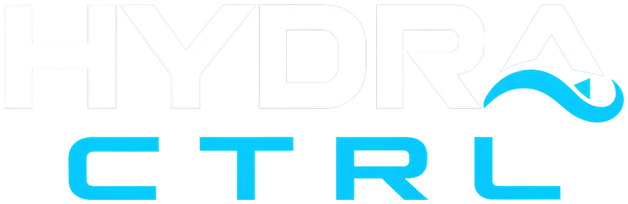

<title>Hydra Ctrl</title>
<meta name="description" content="Hydra Ctrl: Kolleksan su depoları için akıllı seviye, sıcaklık, nem, alev ve hareket takibi.">
<link rel="preconnect" href="https://fonts.googleapis.com">
<link rel="preconnect" href="https://fonts.gstatic.com" crossorigin>
<link rel="stylesheet" href="https://fonts.googleapis.com/css2?family=IBM+Plex+Mono:wght@400;500&family=IBM+Plex+Sans:wght@400;500;600&family=Rajdhani:wght@500;600;700&display=swap">
<style>
/* Yerleşim: koyu "mekanik oda" zemini; cihazın LCD satırları ve uygulama ekranları sayfanın omurgası.
   Marka tek görünüme bağlı (Gece Nöbeti), bilerek tek tema. */
:root {
  color-scheme: dark;
  --gece: #030A1F;        /* zemin */
  --gece-2: #071430;      /* yüzey */
  --gece-3: #0C1E42;      /* çizgi, kart kenarı */
  --buz: #E8F1FF;         /* ana metin */
  --sis: #8FA3C4;         /* ikincil metin */
  --cam: #09B8F0;         /* vurgu: camgöbeği */
  --cam-yumusak: rgba(9,184,240,.14);
  --alev: #F0503C;        /* kritik uyarı */
  --amber: #F2B441;       /* bilgi uyarısı */
  --f-baslik: "Rajdhani", "Arial Narrow", system-ui, sans-serif;
  --f-govde: "IBM Plex Sans", system-ui, -apple-system, "Segoe UI", sans-serif;
  --f-lcd: "IBM Plex Mono", ui-monospace, Consolas, monospace;
  --genislik: 1180px;
  --kenar: clamp(16px, 4vw, 40px);
}
* { box-sizing: border-box; }
html { scroll-behavior: smooth; }
body {
  margin: 0; background: var(--gece); color: var(--buz);
  font: 400 16px/1.65 var(--f-govde);
  -webkit-font-smoothing: antialiased;
}
a { color: var(--cam); }
img { max-width: 100%; display: block; }
:focus-visible { outline: 2px solid var(--cam); outline-offset: 3px; border-radius: 4px; }
.kap { max-width: var(--genislik); margin-inline: auto; padding-inline: var(--kenar); }
h1, h2, h3 { font-family: var(--f-baslik); font-weight: 700; line-height: 1.02; margin: 0; text-wrap: balance; letter-spacing: .005em; }
h2 { font-size: clamp(34px, 5vw, 56px); }
h3 { font-size: 22px; font-weight: 600; line-height: 1.15; }
p { margin: 0; }
.ust-etiket { font: 600 13px/1 var(--f-baslik); letter-spacing: .32em; text-transform: uppercase; color: var(--cam); }
.parla { color: var(--cam); text-shadow: 0 0 28px rgba(9,184,240,.55); }
.soluk { color: var(--sis); }

/* Üst çubuk */
.ust {
  position: sticky; top: env(safe-area-inset-top, 0px); z-index: 20;
  background: rgba(3,10,31,.82); backdrop-filter: blur(14px); -webkit-backdrop-filter: blur(14px);
  border-bottom: 1px solid var(--gece-3);
}
.ust .kap { display: flex; align-items: center; gap: 24px; height: 68px; }
.ust .logo img { height: 30px; width: auto; }
.ust nav { display: flex; gap: 26px; margin-left: auto; }
.ust nav a { color: var(--sis); text-decoration: none; font-size: 15px; font-weight: 500; }
.ust nav a:hover { color: var(--buz); }
.btn {
  display: inline-flex; align-items: center; justify-content: center; gap: 10px;
  font: 600 15px/1 var(--f-govde); text-decoration: none; cursor: pointer;
  padding: 14px 22px; border-radius: 10px; border: 1px solid transparent; white-space: nowrap;
  transition: background .2s, border-color .2s, transform .2s;
}
.btn-cam { background: var(--cam); color: var(--gece); }
.btn-cam:hover { background: #3FCBF7; transform: translateY(-1px); }
.btn-hat { border-color: var(--gece-3); color: var(--buz); background: var(--gece-2); }
.btn-hat:hover { border-color: var(--cam); }
.btn-kucuk { padding: 10px 16px; font-size: 14px; }
.btn svg { width: 20px; height: 20px; flex: none; }
.btn small { display: block; font: 500 11px/1.2 var(--f-govde); opacity: .75; }
.btn .iki-satir { text-align: left; line-height: 1.15; }

/* Hero */
.hero { position: relative; overflow: hidden; padding-block: clamp(48px, 8vw, 96px) clamp(56px, 8vw, 104px); }
.hero::before {
  content: ""; position: absolute; inset: -20% -10% auto auto; width: 70vw; height: 70vw; max-width: 900px; max-height: 900px;
  background: radial-gradient(closest-side, rgba(9,184,240,.16), transparent 70%); pointer-events: none;
}
.hero .kap { position: relative; display: grid; grid-template-columns: 1.05fr .95fr; gap: clamp(32px, 5vw, 72px); align-items: center; }
.hero h1 { font-size: clamp(52px, 7.2vw, 96px); text-transform: uppercase; line-height: .92; margin-block: 22px 26px; }
.hero h1 span { display: block; }
.hero .giris { font-size: clamp(17px, 1.6vw, 19px); color: var(--sis); max-width: 34em; }
.hero .eylem { display: flex; flex-wrap: wrap; gap: 12px; margin-top: 34px; }
.hero .not { margin-top: 18px; font-size: 13px; color: var(--sis); }

.sahne { position: relative; padding-bottom: 92px; }
.sahne svg { width: 100%; height: auto; display: block; overflow: visible; }
.sahne .dalga { animation: dalga 6s linear infinite; }
.sahne .dalga.iki { animation-duration: 9s; animation-direction: reverse; }
@keyframes dalga { to { transform: translateX(120px); } }
.sahne .ses { animation: ses 2.4s ease-out infinite; opacity: 0; }
.sahne .ses:nth-of-type(2) { animation-delay: .8s; }
.sahne .ses:nth-of-type(3) { animation-delay: 1.6s; }
@keyframes ses { 0% { opacity: 0; transform: translateY(-8px); } 25% { opacity: .9; } 100% { opacity: 0; transform: translateY(46px); } }
.sahne .led { animation: nabiz 2s infinite; }
.sahne text { font-family: var(--f-lcd); font-size: 12px; fill: var(--sis); }
.lcd {
  position: absolute; left: 6%; right: 6%; bottom: 0;
  background: rgba(3,10,31,.86); backdrop-filter: blur(8px); -webkit-backdrop-filter: blur(8px);
  border: 1px solid rgba(9,184,240,.35); border-radius: 14px; padding: 14px 18px;
  font: 400 14px/1.75 var(--f-lcd); color: #CFEFFF; font-variant-numeric: tabular-nums;
  box-shadow: 0 0 32px rgba(9,184,240,.15) inset;
}
.lcd .satir { display: flex; justify-content: space-between; gap: 16px; }
.lcd .satir b { font-weight: 500; color: var(--cam); }
.lcd .baslik { display: flex; justify-content: space-between; font-size: 11px; letter-spacing: .14em; text-transform: uppercase; color: var(--sis); margin-bottom: 6px; }
.lcd .canli::before { content: ""; display: inline-block; width: 7px; height: 7px; border-radius: 50%; background: #3BE08A; margin-right: 7px; box-shadow: 0 0 8px #3BE08A; animation: nabiz 2s infinite; }
@keyframes nabiz { 50% { opacity: .35; } }

/* Bölüm */
.bolum { padding-block: clamp(64px, 9vw, 120px); border-top: 1px solid var(--gece-3); }
.bolum-bas { display: grid; gap: 18px; max-width: 720px; margin-bottom: clamp(36px, 5vw, 60px); }
.bolum-bas p { color: var(--sis); font-size: 18px; }

/* Cebinizde */
.ceb { display: grid; grid-template-columns: .8fr 1.2fr; gap: clamp(32px, 6vw, 88px); align-items: center; }
/* Telefon maketi (uygulama ekranlarının çizimi) */
.tel {
  width: 100%; max-width: 300px; margin-inline: auto; aspect-ratio: 9 / 18.6;
  border-radius: 44px; padding: 10px; background: #01040C; border: 1px solid #1B2A4A;
  box-shadow: 0 40px 80px -30px rgba(0,0,0,.9), 0 0 60px rgba(9,184,240,.10);
}
.tel-ekran {
  position: relative; height: 100%; border-radius: 35px; overflow: hidden;
  background: var(--gece); display: flex; flex-direction: column;
  font-size: 11px; line-height: 1.35; color: var(--buz);
}
.tel-ekran::before { content: ""; position: absolute; top: 9px; left: 50%; width: 84px; height: 24px; margin-left: -42px; border-radius: 14px; background: #01040C; z-index: 2; }
.tel-durum { display: flex; justify-content: space-between; align-items: center; padding: 12px 22px 0; height: 40px; font: 600 12px/1 var(--f-govde); }
.tel-durum i { display: inline-flex; gap: 3px; align-items: flex-end; }
.tel-durum i b { width: 3px; background: var(--buz); border-radius: 1px; }
.tel-baslik { display: flex; align-items: center; gap: 10px; padding: 10px 16px 8px; font: 600 14px/1.2 var(--f-baslik); letter-spacing: .02em; }
.tel-baslik span { color: var(--sis); font-size: 16px; }
.tel-govde { flex: 1; display: grid; gap: 8px; align-content: start; padding: 4px 12px; min-height: 0; }
.tel-kart { background: var(--gece-2); border: 1px solid var(--gece-3); border-radius: 12px; padding: 10px 12px; min-width: 0; }
.tel-etk { font: 500 8.5px/1 var(--f-govde); letter-spacing: .14em; text-transform: uppercase; color: var(--sis); }
.tel-seviye { display: grid; grid-template-columns: 1fr auto; gap: 4px 10px; align-items: start; }
.tel-seviye .yuzde { font: 700 30px/1 var(--f-baslik); color: var(--cam); margin-top: 4px; font-variant-numeric: tabular-nums; }
.tel-seviye .kap-yazi { font-size: 9px; color: var(--sis); font-variant-numeric: tabular-nums; }
.tel-seviye .hap { font: 600 8px/1 var(--f-govde); letter-spacing: .1em; color: var(--cam); border: 1px solid rgba(9,184,240,.4); border-radius: 4px; padding: 4px 6px; justify-self: end; }
.silindir { grid-column: 1 / -1; justify-self: center; position: relative; width: 82px; height: 118px; margin-block: 8px 2px; border-radius: 41px / 12px; background: rgba(255,255,255,.04); border: 1px solid rgba(143,163,196,.25); overflow: hidden; }
.silindir .dolu { position: absolute; left: 0; right: 0; bottom: 0; height: var(--doluluk, 74%); background: linear-gradient(90deg, #0A7FC4, #2DCBFF 45%, #0A7FC4); transition: height 1.2s ease; }
.silindir .dolu::before { content: ""; position: absolute; left: 0; right: 0; top: -7px; height: 14px; border-radius: 50%; background: #6FDBFF; opacity: .85; }
.tel-izgara { display: grid; grid-template-columns: 1fr 1fr; gap: 8px; }
.tel-izgara .deger { font: 600 15px/1.1 var(--f-baslik); margin-top: 6px; font-variant-numeric: tabular-nums; }
.tel-aktif { display: grid; grid-template-columns: 1fr 1fr; gap: 8px; }
.tel-aktif div { font-size: 9px; color: var(--sis); }
.tel-aktif b { display: block; color: var(--cam); font-weight: 600; margin-top: 3px; }
.tel-aktif b::before { content: ""; display: inline-block; width: 5px; height: 5px; border-radius: 50%; background: var(--cam); margin-right: 5px; vertical-align: 1px; }
.tel-menu { display: grid; grid-template-columns: repeat(4, 1fr); padding: 10px 8px 18px; border-top: 1px solid var(--gece-3); font-size: 9px; color: var(--sis); text-align: center; }
.tel-menu span::before { content: ""; display: block; width: 16px; height: 16px; margin: 0 auto 4px; border-radius: 5px; border: 1.5px solid currentColor; }
.tel-menu .secili { color: var(--buz); }
.tel-menu .secili::before { background: var(--cam); border-color: var(--cam); }
/* Kilit ekranı */
.kilit { background: radial-gradient(120% 70% at 50% 0%, #10306A 0%, #071430 45%, #030A1F 100%); }
.kilit .saat { text-align: center; font: 600 64px/1 var(--f-baslik); margin-top: 18px; letter-spacing: .02em; }
.kilit .tarih { text-align: center; font-size: 12px; color: #B9C8E4; margin-bottom: 18px; }
.bildirim { display: grid; grid-template-columns: 26px 1fr; gap: 2px 10px; margin: 0 10px 8px; padding: 10px 12px; border-radius: 16px; background: rgba(20,36,70,.72); border: 1px solid rgba(143,163,196,.14); backdrop-filter: blur(6px); }
.bildirim img { grid-row: span 3; width: 26px; height: 26px; border-radius: 7px; background: var(--gece); padding: 3px; object-fit: contain; }
.bildirim .kim { display: flex; justify-content: space-between; font-size: 9px; letter-spacing: .08em; color: #9FB2D3; text-transform: uppercase; }
.bildirim strong { font-size: 12px; font-weight: 600; }
.bildirim p { font-size: 10.5px; color: #C3D0E8; }
.bildirim.kritik { background: rgba(120,24,24,.72); border-color: rgba(240,80,60,.45); }
.bildirim.kritik strong { color: #FFD3CC; }
.ozellik-liste { display: grid; grid-template-columns: repeat(2, minmax(0, 1fr)); gap: 30px 36px; margin-top: 40px; }
.ozellik { display: grid; gap: 8px; min-width: 0; }
.ozellik .ikon { width: 40px; height: 40px; border-radius: 10px; display: grid; place-items: center; background: var(--cam-yumusak); color: var(--cam); margin-bottom: 4px; }
.ozellik .ikon svg { width: 22px; height: 22px; }
.ozellik p { color: var(--sis); font-size: 15px; }

/* Uyarılar */
.uyari-duzen { display: grid; grid-template-columns: 1fr 300px; gap: clamp(28px, 4vw, 56px); align-items: start; }
.uyari-izgara { display: grid; grid-template-columns: repeat(2, minmax(0, 1fr)); gap: 1px; background: var(--gece-3); border: 1px solid var(--gece-3); border-radius: 18px; overflow: hidden; }
.uyari { background: var(--gece-2); padding: 24px 24px 26px; display: grid; gap: 10px; align-content: start; min-width: 0; }
.uyari .ust-satir { display: flex; align-items: center; justify-content: space-between; gap: 12px; }
.uyari .esik { font: 500 12px/1 var(--f-lcd); color: var(--cam); background: var(--cam-yumusak); padding: 6px 9px; border-radius: 6px; white-space: nowrap; font-variant-numeric: tabular-nums; }
.uyari .esik.kritik { color: #FF8A7A; background: rgba(240,80,60,.14); }
.uyari .esik.bilgi { color: var(--amber); background: rgba(242,180,65,.13); }
.uyari p { color: var(--sis); font-size: 15px; }
.uyari-tel { display: grid; gap: 20px; position: sticky; top: 96px; }
.uyari-dipnot { margin-top: 18px; font-size: 13px; color: var(--sis); max-width: 62ch; }

/* Nasıl çalışır */
.adimlar { display: grid; grid-template-columns: repeat(3, minmax(0, 1fr)); gap: 20px; counter-reset: adim; }
.adim { position: relative; padding: 30px 26px 28px; border: 1px solid var(--gece-3); border-radius: 18px; background: linear-gradient(180deg, var(--gece-2), var(--gece)); display: grid; gap: 12px; align-content: start; }
.adim::before { counter-increment: adim; content: "0" counter(adim); font: 700 54px/1 var(--f-baslik); color: transparent; -webkit-text-stroke: 1px rgba(9,184,240,.55); }
.adim p { color: var(--sis); font-size: 15px; }
.video-bant { margin-top: 28px; display: flex; flex-wrap: wrap; align-items: center; justify-content: space-between; gap: 18px; padding: 22px 26px; border-radius: 16px; background: var(--cam-yumusak); border: 1px solid rgba(9,184,240,.3); }
.video-bant p { color: var(--buz); font-weight: 500; }
.video-bant p span { display: block; color: var(--sis); font-weight: 400; font-size: 14px; }

/* Kimler için */
.alanlar { display: grid; grid-template-columns: repeat(3, minmax(0, 1fr)); gap: 0; border-top: 1px solid var(--gece-3); }
.alan { padding: 28px 28px 8px 0; display: grid; gap: 10px; }
.alan + .alan { padding-left: 28px; border-left: 1px solid var(--gece-3); }
.alan p { color: var(--sis); font-size: 15px; }

/* SSS */
.sss { display: grid; grid-template-columns: .8fr 1.2fr; gap: clamp(28px, 5vw, 72px); align-items: start; }
.sss-liste { border-top: 1px solid var(--gece-3); }
.sss details { border-bottom: 1px solid var(--gece-3); }
.sss summary { list-style: none; cursor: pointer; padding: 22px 44px 22px 0; position: relative; font: 600 19px/1.3 var(--f-baslik); letter-spacing: .01em; }
.sss summary::-webkit-details-marker { display: none; }
.sss summary::after { content: ""; position: absolute; right: 6px; top: 50%; width: 12px; height: 12px; margin-top: -9px; border-right: 2px solid var(--cam); border-bottom: 2px solid var(--cam); transform: rotate(45deg); transition: transform .25s; }
.sss details[open] summary::after { transform: rotate(-135deg); margin-top: -3px; }
.sss details p { padding: 0 44px 24px 0; color: var(--sis); font-size: 15.5px; max-width: 64ch; }

/* Teklif */
.teklif { display: grid; grid-template-columns: .9fr 1.1fr; gap: clamp(28px, 5vw, 72px); align-items: start; }
.iletisim { display: grid; gap: 22px; margin-top: 34px; }
.iletisim-satir { display: grid; gap: 4px; }
.iletisim-satir .etk { font: 600 12px/1 var(--f-baslik); letter-spacing: .2em; text-transform: uppercase; color: var(--sis); }
.iletisim-satir .deger { display: flex; align-items: center; gap: 10px; flex-wrap: wrap; font-size: 17px; user-select: all; }
.kopyala { font: 500 12px/1 var(--f-govde); color: var(--cam); background: none; border: 1px solid var(--gece-3); border-radius: 6px; padding: 6px 9px; cursor: pointer; user-select: none; }
.kopyala:hover { border-color: var(--cam); }
form.kart { background: var(--gece-2); border: 1px solid var(--gece-3); border-radius: 20px; padding: clamp(22px, 3vw, 34px); display: grid; grid-template-columns: repeat(2, minmax(0, 1fr)); gap: 18px; }
.alan-giris { display: grid; gap: 7px; min-width: 0; }
.alan-giris.tam { grid-column: 1 / -1; }
label { font-size: 13px; font-weight: 500; color: var(--sis); }
input, select, textarea {
  width: 100%; font: 400 16px/1.4 var(--f-govde); color: var(--buz);
  background: var(--gece); border: 1px solid var(--gece-3); border-radius: 10px; padding: 13px 14px;
}
input:focus, select:focus, textarea:focus { outline: none; border-color: var(--cam); box-shadow: 0 0 0 3px var(--cam-yumusak); }
textarea { resize: vertical; min-height: 110px; }
.form-alt { grid-column: 1 / -1; display: flex; flex-wrap: wrap; align-items: center; gap: 16px; justify-content: space-between; }
.form-alt small { color: var(--sis); font-size: 12.5px; max-width: 40ch; }
.durum { grid-column: 1 / -1; font-size: 14px; padding: 12px 14px; border-radius: 10px; background: var(--cam-yumusak); color: var(--buz); }

/* Alt */
footer { border-top: 1px solid var(--gece-3); padding-block: 48px 40px; }
footer .kap { display: grid; grid-template-columns: 1.2fr 1fr 1fr; gap: 36px; }
footer .kolleksan { height: 34px; width: auto; opacity: .85; margin-bottom: 14px; }
footer p, footer a { color: var(--sis); font-size: 14px; }
footer a { text-decoration: none; display: block; margin-bottom: 8px; }
footer a:hover { color: var(--buz); }
footer h4 { font: 600 13px/1 var(--f-baslik); letter-spacing: .2em; text-transform: uppercase; color: var(--buz); margin: 0 0 16px; }
.telif { grid-column: 1 / -1; padding-top: 26px; border-top: 1px solid var(--gece-3); font-size: 13px; color: var(--sis); }

/* Duyarlı */
@media (max-width: 960px) {
  .ust nav { display: none; }
  .ust .btn { margin-left: auto; }
  .hero .kap, .ceb, .sss, .teklif, .uyari-duzen { grid-template-columns: minmax(0, 1fr); }
  .uyari-tel { position: static; }
  .ceb .tel { order: 2; }
  .adimlar { grid-template-columns: minmax(0, 1fr); }
  .alanlar { grid-template-columns: minmax(0, 1fr); }
  .alan, .alan + .alan { padding: 22px 0; border-left: 0; border-bottom: 1px solid var(--gece-3); }
  footer .kap { grid-template-columns: minmax(0, 1fr) minmax(0, 1fr); }
  footer .kap > div:first-child { grid-column: 1 / -1; }
}
@media (max-width: 600px) {
  .ozellik-liste, .uyari-izgara, form.kart { grid-template-columns: minmax(0, 1fr); }
  .lcd { font-size: 12.5px; left: 12px; right: 12px; bottom: 12px; padding: 12px 14px; }
  .ust .logo img { height: 24px; }
}
@media (prefers-reduced-motion: reduce) {
  html { scroll-behavior: auto; }
  *, *::before { animation: none !important; transition: none !important; }
}
</style>

<header class="ust">
  <div class="kap">
    <a class="logo" href="#ust" aria-label="Hydra Ctrl ana sayfa"></a>
    <nav aria-label="Ana menü">
      <a href="#ozellikler">Özellikler</a>
      <a href="#uyarilar">Uyarılar</a>
      <a href="#kurulum">Kurulum</a>
      <a href="#sss">SSS</a>
    </nav>
    <a class="btn btn-cam btn-kucuk" href="#teklif">Teklif alın</a>
  </div>
</header>

<main id="ust">
  <section class="hero">
    <div class="kap">
      <div>
        <div class="ust-etiket">Kolleksan su depoları için</div>
        <h1><span>Ölç. İzle.</span><span class="parla">Kontrol et.</span></h1>
        <p class="giris">Hydra Ctrl, deponuza takılan akıllı bir cihaz ve ona bağlı bir uygulamadır. Su seviyesini, suyun ve ortamın sıcaklığını, nemi, alevi ve hareketi ölçer; bir sorun olduğunda telefonunuza haber verir.</p>
        <div class="eylem">
          <a class="btn btn-cam" href="#teklif">Teklif alın</a>
          <a class="btn btn-hat" href="https://play.google.com/store/apps/details?id=com.hydractrl.app" rel="noopener">
            <svg viewBox="0 0 24 24" aria-hidden="true"><path fill="currentColor" d="M5 3.2v17.6c0 .8.9 1.3 1.6.9l14.6-8.8c.7-.4.7-1.4 0-1.8L6.6 2.3C5.9 1.9 5 2.4 5 3.2z"/></svg>
            <span class="iki-satir"><small>Uygulamayı indirin</small>Google Play</span>
          </a>
        </div>
        <p class="not">iOS sürümü hazırlanıyor.</p>
      </div>
      <div class="sahne">
        <svg viewBox="0 0 480 470" role="img" aria-label="Kesitli su deposu çizimi: kapaktaki ultrasonik sensör su yüzeyini ölçüyor, depo yüzde 74 dolu, sensör kabloyla Hydra Ctrl cihazına bağlı">
          <defs>
            <linearGradient id="g-su" x1="0" y1="0" x2="0" y2="1"><stop offset="0" stop-color="#3FD3FF"/><stop offset=".35" stop-color="#109BDD"/><stop offset="1" stop-color="#05396E"/></linearGradient>
            <linearGradient id="g-govde" x1="0" y1="0" x2="1" y2="0"><stop offset="0" stop-color="#0A1A3A"/><stop offset=".5" stop-color="#0E2348"/><stop offset="1" stop-color="#081530"/></linearGradient>
            <clipPath id="c-ic"><rect x="106" y="110" width="248" height="336" rx="18"/></clipPath>
          </defs>
          <ellipse cx="230" cy="462" rx="160" ry="7" fill="#000" opacity=".55"/>
          <g stroke="#1B3566" stroke-width="1.5">
            <line x1="64" y1="110" x2="76" y2="110"/><line x1="68" y1="194" x2="76" y2="194"/><line x1="64" y1="278" x2="76" y2="278"/><line x1="68" y1="362" x2="76" y2="362"/><line x1="64" y1="446" x2="76" y2="446"/>
          </g>
          <text x="56" y="114" text-anchor="end">100</text><text x="56" y="282" text-anchor="end">50</text><text x="56" y="450" text-anchor="end">0</text>
          <rect x="96" y="96" width="268" height="360" rx="28" fill="url(#g-govde)" stroke="#1B3566" stroke-width="2"/>
          <g clip-path="url(#c-ic)">
            <rect x="106" y="110" width="248" height="336" fill="#061230"/>
            <path class="dalga iki" d="M-240 200 q30 -6 60 0 t60 0 t60 0 t60 0 t60 0 t60 0 t60 0 t60 0 t60 0 t60 0 t60 0 t60 0 t60 0 t60 0 t60 0 t60 0 V460 H-240 Z" fill="#0B6FB0" opacity=".55"/>
            <path class="dalga" d="M-240 196 q30 -7 60 0 t60 0 t60 0 t60 0 t60 0 t60 0 t60 0 t60 0 t60 0 t60 0 t60 0 t60 0 t60 0 t60 0 t60 0 t60 0 V460 H-240 Z" fill="url(#g-su)" opacity=".92"/>
          </g>
          <g stroke="#8FA3C4" stroke-opacity=".07" stroke-width="2"><line x1="96" y1="170" x2="364" y2="170"/><line x1="96" y1="250" x2="364" y2="250"/><line x1="96" y1="330" x2="364" y2="330"/><line x1="96" y1="410" x2="364" y2="410"/></g>
          <line x1="96" y1="192" x2="372" y2="192" stroke="#09B8F0" stroke-width="1.2" stroke-dasharray="4 6"/>
          <text x="380" y="197" style="fill:#09B8F0;font-size:15px">%74</text>
          <rect x="180" y="80" width="100" height="18" rx="5" fill="#0F2550" stroke="#1B3566" stroke-width="2"/>
          <path d="M248 66 C 300 22, 352 30, 392 72" fill="none" stroke="#2A4775" stroke-width="3" stroke-linecap="round"/>
          <rect x="212" y="58" width="36" height="24" rx="5" fill="#12305F" stroke="#09B8F0" stroke-width="1.5"/>
          <circle cx="223" cy="70" r="5" fill="#030A1F" stroke="#09B8F0"/><circle cx="237" cy="70" r="5" fill="#030A1F" stroke="#09B8F0"/>
          <g fill="none" stroke="#09B8F0" stroke-width="2" stroke-linecap="round">
            <path class="ses" d="M206 112 q24 10 48 0"/><path class="ses" d="M206 112 q24 10 48 0"/><path class="ses" d="M206 112 q24 10 48 0"/>
          </g>
          <rect x="384" y="50" width="88" height="66" rx="9" fill="#0C1A36" stroke="#1B3566" stroke-width="2"/>
          <rect x="394" y="60" width="50" height="30" rx="3" fill="#06223A" stroke="#09B8F0" stroke-opacity=".5"/>
          <g fill="#09B8F0" opacity=".75"><rect x="398" y="65" width="30" height="3" rx="1"/><rect x="398" y="72" width="38" height="3" rx="1"/><rect x="398" y="79" width="24" height="3" rx="1"/></g>
          <circle class="led" cx="458" cy="74" r="4" fill="#3BE08A"/>
          <text x="394" y="108" style="font-size:9px;letter-spacing:.12em">HYDRA CTRL</text>
        </svg>
        <div class="lcd" aria-label="Örnek cihaz ölçümleri">
          <div class="baslik"><span class="canli">Canlı</span><span>Merkez Depo · örnek</span></div>
          <div class="satir"><span>Su Seviyesi</span><b data-oku="seviye">%74</b></div>
          <div class="satir"><span>Depodaki Su</span><b data-oku="litre">12.588 L</b></div>
          <div class="satir"><span>Su Sıcaklığı</span><b data-oku="su">19,2 °C</b></div>
          <div class="satir"><span>Ortam Sıc. / Nem</span><b data-oku="ortam">22,1 °C · %49</b></div>
        </div>
      </div>
    </div>
  </section>

  <section class="bolum" id="ozellikler">
    <div class="kap ceb">
      <div class="tel" role="img" aria-label="Hydra Ctrl uygulamasında depo ekranı çizimi">
        <div class="tel-ekran">
          <div class="tel-durum"><span>9:41</span><i><b style="height:4px"></b><b style="height:6px"></b><b style="height:8px"></b><b style="height:10px"></b></i></div>
          <div class="tel-baslik"><span>&larr;</span>Örnek Bölge - Merkez Depo</div>
          <div class="tel-govde">
            <div class="tel-kart tel-seviye">
              <div><div class="tel-etk">Seviye</div><div class="yuzde" data-oku="seviye">%74</div></div>
              <span class="hap">NORMAL</span>
              <div class="kap-yazi" style="grid-column:1/-1"><span data-oku="litre">12.588 L</span> / 17.034 L kapasite</div>
              <div class="silindir"><div class="dolu" id="dolu"></div></div>
            </div>
            <div class="tel-izgara">
              <div class="tel-kart"><div class="tel-etk">Su sıcaklığı</div><div class="deger" data-oku="su">19,2 °C</div></div>
              <div class="tel-kart"><div class="tel-etk">Depodaki su</div><div class="deger" data-oku="litre">12.588 L</div></div>
              <div class="tel-kart"><div class="tel-etk">Ortam sıcaklığı</div><div class="deger" data-oku="ortamS">22,1 °C</div></div>
              <div class="tel-kart"><div class="tel-etk">Nem</div><div class="deger" data-oku="nem">%49</div></div>
            </div>
            <div class="tel-kart tel-aktif"><div>Yangın algılama<b>Aktif</b></div><div>Hareket algılama<b>Aktif</b></div></div>
          </div>
          <div class="tel-menu"><span class="secili">Genel</span><span>Grafik</span><span>Ayarlar</span><span>Bilgiler</span></div>
        </div>
      </div>
      <div>
        <div class="ust-etiket">Uygulama</div>
        <h2 style="margin-top:18px">Deponuz artık <span class="parla">cebinizde.</span></h2>
        <p class="soluk" style="margin-top:18px;font-size:18px;max-width:36em">Deponun içinde ne kadar su olduğunu görmek için çatıya ya da mekanik odaya çıkmanız gerekmez. Bütün ölçümler tek ekranda, nerede olursanız olun.</p>
        <div class="ozellik-liste">
          <div class="ozellik">
            <div class="ikon"><svg viewBox="0 0 24 24" fill="none" stroke="currentColor" stroke-width="1.8" stroke-linecap="round" stroke-linejoin="round" aria-hidden="true"><path d="M12 3s6 6.4 6 11a6 6 0 0 1-12 0c0-4.6 6-11 6-11z"/><path d="M8.5 14.5a3.5 3.5 0 0 0 3.5 3.5"/></svg></div>
            <h3>Seviye ve litre</h3>
            <p>Ultrasonik sensör depodaki su yüksekliğini ölçer; uygulama bunu deponuzun ölçülerine göre yüzdeye ve litreye çevirir.</p>
          </div>
          <div class="ozellik">
            <div class="ikon"><svg viewBox="0 0 24 24" fill="none" stroke="currentColor" stroke-width="1.8" stroke-linecap="round" stroke-linejoin="round" aria-hidden="true"><path d="M14 14.8V4a2 2 0 0 0-4 0v10.8a4 4 0 1 0 4 0z"/></svg></div>
            <h3>Sıcaklık ve nem</h3>
            <p>Su sıcaklığı, ortam sıcaklığı ve bağıl nem ayrı ayrı ölçülür.</p>
          </div>
          <div class="ozellik">
            <div class="ikon"><svg viewBox="0 0 24 24" fill="none" stroke="currentColor" stroke-width="1.8" stroke-linecap="round" stroke-linejoin="round" aria-hidden="true"><path d="M3 3v18h18"/><path d="m7 15 4-4 3 3 5-6"/></svg></div>
            <h3>Geçmiş grafikleri</h3>
            <p>Seviye ve sıcaklığın zaman içindeki değişimini grafiklerle izleyin, tüketiminizi görün.</p>
          </div>
          <div class="ozellik">
            <div class="ikon"><svg viewBox="0 0 24 24" fill="none" stroke="currentColor" stroke-width="1.8" stroke-linecap="round" stroke-linejoin="round" aria-hidden="true"><rect x="3" y="4" width="18" height="17" rx="2"/><path d="M3 9h18M8 2v4M16 2v4"/></svg></div>
            <h3>Bakım hatırlatması</h3>
            <p>Deponun bir sonraki bakımına kaç gün kaldığı ekranda görünür, zamanı gelince hatırlatılır.</p>
          </div>
          <div class="ozellik">
            <div class="ikon"><svg viewBox="0 0 24 24" fill="none" stroke="currentColor" stroke-width="1.8" stroke-linecap="round" stroke-linejoin="round" aria-hidden="true"><rect x="3" y="3" width="7" height="7" rx="1"/><rect x="14" y="3" width="7" height="7" rx="1"/><rect x="3" y="14" width="7" height="7" rx="1"/><rect x="14" y="14" width="7" height="7" rx="1"/></svg></div>
            <h3>Birden fazla depo</h3>
            <p>Evinizdeki, iş yerinizdeki ya da sitenizdeki bütün depoları tek hesaptan takip edin.</p>
          </div>
          <div class="ozellik">
            <div class="ikon"><svg viewBox="0 0 24 24" fill="none" stroke="currentColor" stroke-width="1.8" stroke-linecap="round" stroke-linejoin="round" aria-hidden="true"><path d="M12 2l7 4v6c0 4.6-3 8.4-7 10-4-1.6-7-5.4-7-10V6z"/><path d="m9 12 2 2 4-4"/></svg></div>
            <h3>Garanti ve destek</h3>
            <p>Depo bilgileri, garanti şartları, sık sorulan sorular ve kullanım videoları uygulamanın içinde.</p>
          </div>
        </div>
      </div>
    </div>
  </section>

  <section class="bolum" id="uyarilar">
    <div class="kap">
      <div class="bolum-bas">
        <div class="ust-etiket">Bildirimler</div>
        <h2>Bir şey olursa <span class="parla">ilk siz bilin.</span></h2>
        <p>Cihaz ölçümleri sunucuya gönderir; bir eşik aşıldığında uygulama telefonunuza bildirim düşer. Hangi uyarıları alacağınızı uygulamanın Ayarlar bölümünden seçersiniz.</p>
      </div>
      <div class="uyari-duzen">
        <div>
          <div class="uyari-izgara">
            <div class="uyari">
              <div class="ust-satir"><h3>Alev algılandı</h3><span class="esik kritik">ANINDA</span></div>
              <p>Alev sensörü ateş gördüğü an cihaz sesli alarm verir, uygulama da kritik bildirim gönderir.</p>
            </div>
            <div class="uyari">
              <div class="ust-satir"><h3>Hareket algılandı</h3><span class="esik">ANINDA</span></div>
              <p>Depo çevresinde ya da mekanik odada hareket olduğunda haberiniz olur.</p>
            </div>
            <div class="uyari">
              <div class="ust-satir"><h3>Taşma</h3><span class="esik">SEVİYE</span></div>
              <p>Depo dolmak üzereyken uyarır; flatör arızası gibi durumları erkenden fark edersiniz.</p>
            </div>
            <div class="uyari">
              <div class="ust-satir"><h3>Boşalma</h3><span class="esik">SEVİYE</span></div>
              <p>Su seviyesi düştüğünde bildirir; susuz kalmadan önlem alırsınız.</p>
            </div>
            <div class="uyari">
              <div class="ust-satir"><h3>Donma riski</h3><span class="esik bilgi">≤ 4 °C</span></div>
              <p>Su sıcaklığı 4 °C'ye inince haber verir, 1 °C'nin altında "Su donmak üzere" diye kritik uyarı gönderir.</p>
            </div>
            <div class="uyari">
              <div class="ust-satir"><h3>Bakteri riski</h3><span class="esik bilgi">&gt; 25 °C · 2 sa</span></div>
              <p>Su 2 saatten uzun süre 25 °C'nin üzerinde kalırsa uyarır. Bu aralık Legionella gibi bakterilerin çoğalmasına uygundur.</p>
            </div>
            <div class="uyari">
              <div class="ust-satir"><h3>Terleme ve korozyon</h3><span class="esik bilgi">ÇİĞ NOKTASI</span></div>
              <p>Ortam sıcaklığı ve nemden çiğ noktasını hesaplar. Su bu noktaya kadar soğuksa depo yüzeyi terler; uzun sürerse küf ve korozyon başlar.</p>
            </div>
            <div class="uyari">
              <div class="ust-satir"><h3>Bakım zamanı</h3><span class="esik">TAKVİM</span></div>
              <p>Depo temizliği ve dezenfeksiyon zamanı geldiğinde hatırlatır.</p>
            </div>
          </div>
          <p class="uyari-dipnot">Hydra Ctrl bir bilgilendirme sistemidir; hırsız alarmı, yangın söndürme ya da dondan koruma sisteminin yerine geçmez. Bildirimlerin ulaşması internet bağlantısına ve telefon ayarlarına bağlıdır.</p>
        </div>
        <div class="uyari-tel">
          <div class="tel" role="img" aria-label="Kilit ekranında Hydra Ctrl bildirimleri çizimi">
            <div class="tel-ekran kilit">
              <div class="tel-durum"><span></span><i><b style="height:4px"></b><b style="height:6px"></b><b style="height:8px"></b><b style="height:10px"></b></i></div>
              <div class="saat">12:55</div>
              <div class="tarih">7 Ekim Salı</div>
              <div class="bildirim kritik"><div class="kim"><span>Hydra Ctrl</span><span>şimdi</span></div><strong>Alev algılandı!</strong><p>Merkez Depo sensörü alev görüyor. Hemen kontrol edin.</p></div>
              <div class="bildirim"><div class="kim"><span>Hydra Ctrl</span><span>3 dk</span></div><strong>Depo taşma uyarısı</strong><p>Merkez Depo %97 seviyesine ulaştı.</p></div>
              <div class="bildirim"><div class="kim"><span>Hydra Ctrl</span><span>15 dk</span></div><strong>Hareket algılandı</strong><p>Merkez Depo çevresinde hareket var.</p></div>
              <div class="bildirim"><div class="kim"><span>Hydra Ctrl</span><span>1 sa</span></div><strong>Donma riski</strong><p>Su sıcaklığı 3,8 °C'ye düştü.</p></div>
            </div>
          </div>
        </div>
      </div>
    </div>
  </section>

  <section class="bolum" id="kurulum">
    <div class="kap">
      <div class="bolum-bas">
        <div class="ust-etiket">Nasıl çalışır</div>
        <h2>Üç adımda <span class="parla">kurulum.</span></h2>
        <p>Cihazı Kolleksan ekibi deponuza takar ve müşteri hesabınızı açar. Gerisini uygulamadan birkaç dakikada siz tamamlarsınız.</p>
      </div>
      <div class="adimlar">
        <div class="adim">
          <h3>Cihaz deponuza takılır</h3>
          <p>Seviye sensörü depo kapağına, cihaz depo yanına monte edilir. Kullanıcı adınız ve şifreniz size teslim edilir.</p>
        </div>
        <div class="adim">
          <h3>WiFi'ye Bluetooth ile bağlanır</h3>
          <p>Uygulamayı açın, cihazı Bluetooth ile bulun ve evinizin ya da iş yerinizin WiFi ağını seçin. Cihaz 2,4 GHz ağlara bağlanır.</p>
        </div>
        <div class="adim">
          <h3>QR kodu okutun</h3>
          <p>Depo etiketindeki QR kodu "Depolarım" ekranından okutun. Depo hesabınıza eklenir, ölçümler akmaya başlar.</p>
        </div>
      </div>
      <div class="video-bant">
        <p>Kurulumu adım adım izleyin<span>Kullanım ve kurulum videoları YouTube'da.</span></p>
        <a class="btn btn-hat btn-kucuk" href="https://www.youtube.com/playlist?list=PLDFw1KrT73WI" rel="noopener">Videoları aç</a>
      </div>
    </div>
  </section>

  <section class="bolum">
    <div class="kap">
      <div class="bolum-bas">
        <div class="ust-etiket">Kimler için</div>
        <h2>Deponun olduğu <span class="parla">her yer.</span></h2>
      </div>
      <div class="alanlar">
        <div class="alan">
          <h3>Müstakil ev ve yazlık</h3>
          <p>Uzaktaki evinizin deposunda su kaldı mı, kışın donma riski var mı, gitmeden görün.</p>
        </div>
        <div class="alan">
          <h3>Apartman ve site</h3>
          <p>Yönetici ya da görevli, mekanik odadaki depoların durumunu telefonundan izler; taşma ve arızayı erken fark eder.</p>
        </div>
        <div class="alan">
          <h3>İşletme ve tesis</h3>
          <p>Birden fazla depoyu tek hesapta toplayın; alev ve yetkisiz giriş uyarılarıyla mekanik odanızı koruma altına alın.</p>
        </div>
      </div>
    </div>
  </section>

  <section class="bolum" id="sss">
    <div class="kap sss">
      <div class="bolum-bas" style="margin-bottom:0">
        <div class="ust-etiket">SSS</div>
        <h2>Sık sorulan <span class="parla">sorular.</span></h2>
        <p>Aradığınızı bulamazsanız bize yazın, yardımcı olalım.</p>
      </div>
      <div class="sss-liste">
        <details>
          <summary>Hydra Ctrl'ü kullanmak için ne gerekiyor?</summary>
          <p>Deponuza takılı bir Hydra Ctrl cihazı, cihazın bağlanacağı 2,4 GHz bir WiFi ağı ve Kolleksan'ın sizin için açtığı müşteri hesabı. Uygulama ücretsizdir.</p>
        </details>
        <details>
          <summary>Mevcut depoma takılabilir mi?</summary>
          <p>Hydra Ctrl Kolleksan su depoları için geliştirildi. Deponuzun uygun olup olmadığını öğrenmek için teklif formundan bize ulaşın.</p>
        </details>
        <details>
          <summary>Modemimi ya da WiFi şifremi değiştirdim, ne yapmalıyım?</summary>
          <p>Uygulamada Ayarlar &gt; Cihaz &gt; WiFi bağlantısı ekranından yeni ağı tanıtın. Cihaz ekranında "WiFi kurulum modu" yazmıyorsa cihazdaki kurulum tuşuna 5 saniye basılı tutun.</p>
        </details>
        <details>
          <summary>"Su sıcaklığı yüksek" uyarısı suda bakteri var demek mi?</summary>
          <p>Hayır. Sistem suyun sıcaklığını ölçer, bakteri ölçmez. Uyarı, suyun bakterilerin çoğalmasına uygun sıcaklıkta uzun süre kaldığını söyler. Deponun gölgelenmesi ve düzenli temizlenmesi önerilir; suyun içilebilirliği ancak laboratuvar analiziyle belirlenir.</p>
        </details>
        <details>
          <summary>Alev alarmı çaldı, ne yapmalıyım?</summary>
          <p>Önce güvenliğinizi sağlayın ve depo çevresini kontrol edin; gerçek bir yangın varsa hemen 112'yi arayın. Cihazın sesini kurulum tuşuna kısaca basarak susturabilirsiniz; alev sürdükçe uygulamadaki uyarı devam eder.</p>
        </details>
        <details>
          <summary>Birden fazla depomu aynı hesaptan izleyebilir miyim?</summary>
          <p>Evet. Her deponun etiketindeki QR kodu "Depolarım" ekranından okutarak hesabınıza ekleyebilirsiniz.</p>
        </details>
        <details>
          <summary>Elektrik ya da internet kesilirse ne olur?</summary>
          <p>Cihaz ölçüm gönderemez ve uygulamadaki değerler güncellenmez. Bağlantı geri geldiğinde cihaz kendiliğinden yeniden bağlanır ve ölçüm göndermeye devam eder.</p>
        </details>
      </div>
    </div>
  </section>

  <section class="bolum" id="teklif">
    <div class="kap teklif">
      <div>
        <div class="ust-etiket">Teklif ve iletişim</div>
        <h2 style="margin-top:18px">Deponuzu <span class="parla">akıllı hale getirin.</span></h2>
        <p class="soluk" style="margin-top:18px;font-size:18px">Depo sayınızı ve nerede kullanacağınızı yazın, size uygun teklifle dönelim.</p>
        <div class="iletisim">
          <div class="iletisim-satir">
            <span class="etk">E-posta</span>
            <span class="deger">info@kolleksan.com <button class="kopyala" type="button" data-kopya="info@kolleksan.com">Kopyala</button></span>
          </div>
          <div class="iletisim-satir">
            <span class="etk">Telefon</span>
            <span class="deger">+90 (382) 213 12 53 <button class="kopyala" type="button" data-kopya="+903822131253">Kopyala</button></span>
          </div>
          <div class="iletisim-satir">
            <span class="etk">Adres</span>
            <span class="deger" style="font-size:15px;user-select:text">Erenler OSB, 29. Sokak No: 1, 68220 Taşpınar / Aksaray</span>
          </div>
        </div>
      </div>
      <form class="kart" id="teklif-formu" novalidate>
        <div class="alan-giris">
          <label for="ad">Ad soyad</label>
          <input id="ad" name="ad" autocomplete="name" required value="">
        </div>
        <div class="alan-giris">
          <label for="firma">Firma / site adı <span class="soluk">(isteğe bağlı)</span></label>
          <input id="firma" name="firma" autocomplete="organization">
        </div>
        <div class="alan-giris">
          <label for="telefon">Telefon</label>
          <input id="telefon" name="telefon" type="tel" autocomplete="tel" inputmode="tel" required>
        </div>
        <div class="alan-giris">
          <label for="eposta">E-posta</label>
          <input id="eposta" name="eposta" type="email" autocomplete="email">
        </div>
        <div class="alan-giris">
          <label for="kullanim">Kullanım yeri</label>
          <select id="kullanim" name="kullanim">
            <option>Müstakil ev / yazlık</option>
            <option>Apartman / site</option>
            <option>İşletme / tesis</option>
            <option>Bayi / satıcı</option>
          </select>
        </div>
        <div class="alan-giris">
          <label for="adet">Depo sayısı</label>
          <input id="adet" name="adet" type="number" min="1" inputmode="numeric" value="1">
        </div>
        <div class="alan-giris tam">
          <label for="mesaj">Mesajınız</label>
          <textarea id="mesaj" name="mesaj" placeholder="Depo hacmi, il/ilçe, mevcut deponuz var mı gibi bilgiler teklifi hızlandırır."></textarea>
        </div>
        <div class="form-alt">
          <small>Bilgileriniz yalnızca teklif hazırlamak için kullanılır.</small>
          <button class="btn btn-cam" type="submit">Teklif iste</button>
        </div>
        <div class="durum" id="form-durum" hidden></div>
      </form>
    </div>
  </section>
</main>

<footer>
  <div class="kap">
    <div>
      
      <p>Hydra Ctrl, Kolleksan İnovasyon Mühendislik A.Ş. tarafından geliştirilmiştir.</p>
    </div>
    <div>
      <h4>Hydra Ctrl</h4>
      <a href="#ozellikler">Özellikler</a>
      <a href="#uyarilar">Uyarılar</a>
      <a href="#kurulum">Kurulum</a>
      <a href="#sss">Sık sorulan sorular</a>
    </div>
    <div>
      <h4>Kurumsal</h4>
      <a href="https://kolleksan.com" rel="noopener">kolleksan.com</a>
      <a href="https://kolleksan.com/mobil-uygulama-gizlilik-politikasi/" rel="noopener">Gizlilik politikası</a>
      <a href="https://play.google.com/store/apps/details?id=com.hydractrl.app" rel="noopener">Google Play</a>
    </div>
    <p class="telif">© 2026 Kolleksan İnovasyon Mühendislik A.Ş. Tüm hakları saklıdır.</p>
  </div>
</footer>

<script>
(function () {
  // Kopyala düğmeleri
  document.querySelectorAll('.kopyala').forEach(function (b) {
    b.addEventListener('click', function () {
      var metin = b.getAttribute('data-kopya');
      var bitti = function () { b.textContent = 'Kopyalandı'; setTimeout(function () { b.textContent = 'Kopyala'; }, 1600); };
      if (navigator.clipboard && navigator.clipboard.writeText) {
        navigator.clipboard.writeText(metin).then(bitti, function () { secTut(b); });
      } else { secTut(b); }
    });
  });
  function secTut(b) {
    var r = document.createRange(); r.selectNodeContents(b.parentNode.firstChild);
    var s = window.getSelection(); s.removeAllRanges(); s.addRange(r);
    b.textContent = 'Seçildi, Ctrl+C';
  }

  // Örnek LCD değerleri: küçük, gerçekçi oynamalar
  var reduce = window.matchMedia('(prefers-reduced-motion: reduce)').matches;
  var kap = 17034, seviye = 74.0, su = 19.2, ortam = 22.1, nem = 49;
  var yaz = function (k, v) { document.querySelectorAll('[data-oku="' + k + '"]').forEach(function (e) { e.textContent = v; }); };
  var tr = function (n, d) { return n.toFixed(d).replace('.', ','); };
  function guncelle() {
    seviye = Math.min(78, Math.max(70, seviye + (Math.random() - .55) * .4));
    su += (Math.random() - .5) * .1; ortam += (Math.random() - .5) * .1;
    nem = Math.round(Math.min(52, Math.max(46, nem + (Math.random() - .5) * 1.2)));
    yaz('seviye', '%' + Math.round(seviye));
    yaz('litre', Math.round(kap * seviye / 100).toLocaleString('tr-TR') + ' L');
    yaz('su', tr(su, 1) + ' °C');
    yaz('ortam', tr(ortam, 1) + ' °C · %' + nem);
    yaz('ortamS', tr(ortam, 1) + ' °C');
    yaz('nem', '%' + nem);
    var d = document.getElementById('dolu'); if (d) d.style.setProperty('--doluluk', seviye + '%');
  }
  if (!reduce) setInterval(guncelle, 3000);

  // Teklif formu: önizlemede gönderim yok, yayında e-posta/form servisine bağlanacak
  var form = document.getElementById('teklif-formu');
  var durum = document.getElementById('form-durum');
  form.addEventListener('submit', function (e) {
    e.preventDefault();
    var ad = form.ad.value.trim(), tel = form.telefon.value.trim();
    durum.hidden = false;
    if (!ad || !tel) {
      durum.textContent = 'Size dönebilmemiz için ad soyad ve telefon alanlarını doldurun.';
      (ad ? form.telefon : form.ad).focus();
      return;
    }
    durum.textContent = 'Bu bir önizleme: form henüz bir adrese bağlı değil. Yayına alındığında talebiniz info@kolleksan.com adresine iletilecek.';
  });
})();
</script>
